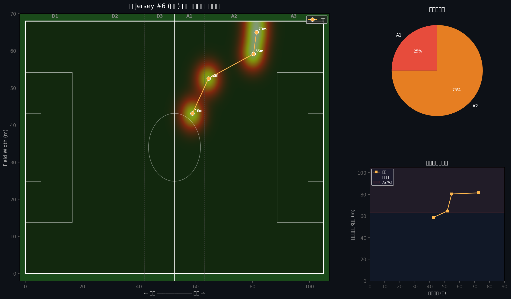

🎯 TZI ゾーン分析レポート
早稲田 vs 立教 · 2026-03-25 · Jersey #6 牧野羽瑠
Total Zone Score
60
✅ 通常
P
20/20
M
2/20
D
15/20
V
8/20
B
15/20
マッチサマリー
試合
ポゼッション（早稲田）
0.0%
ポゼッション（立教）
0.0%
アタック侵入（早稲田）
0 回
アタック侵入（立教）
0 回
#6 確認ポジション数
4 点
分析バージョン
📍 フィールドポジションマップ

ゾーン分布
D1
0%
D2
0%
D3
0%
A1
25%
A2
75%
A3
0%
D1-D3 = 自陣 · A1-A3 = 敵陣
🔑 ゾーン入りトリガー
A2
2H 52分
← 敵陣深く侵入 (X=64.5m)
A2
2H 55分
← 敵陣深く侵入 (X=80.3m)
A2
2H 73分
← 敵陣深く侵入 (X=81.3m)
アタッキングゾーン（A1-A3）での検出瞬間を特定。 この瞬間の試合映像フレームを確認し、動き・判断パターンを言語化することで 毎試合ゾーンを再現するルーティンを構築できる。
📊 ポジションタイムライン
時刻
座標 (m)
ゾーン
メモ
2H 42.7m
(58.8, 43.1)
A1
auto_v2_ocr
2H 51.7m
(64.5, 52.6)
A2
auto_v2_ocr
2H 54.7m
(80.3, 59.2)
A2
auto_v2_ocr
2H 72.7m
(81.3, 65.0)
A2
auto_v2_ocr
📝 次の試合へのアクション
アタッキングゾーン到達率を高める → 試合前に「A2/A3侵入イメージ」を3回反復
ポジション変化の速さ（D指標）を改善 → ボール受け前に次の動き先を決定
フィールドカバー範囲（V指標）を拡大 → 視野確認ルーティンを組み込む
次の試合映像を Google Drive にアップロードし再分析を実行
現在のゾーンスコア: 60/100
目標: 70点以上（準ゾーン）を毎試合安定させる → 90点以上（完全ゾーン）の試合を増やす
TZI — Tactical Zone Intelligence · Indica Labs · 2026